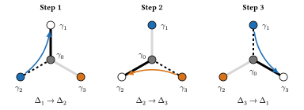
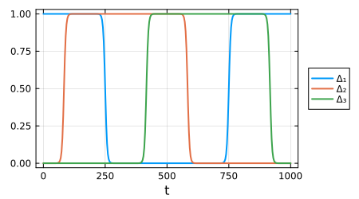

Braiding Majorana zero modes
Exchanging two Majorana zero modes $γ_i$ and $γ_j$ acts on the degenerate ground states with the unitary
\[B_{ij} = \exp\left(\frac{π}{4} γ_i γ_j\right) = \frac{1 + γ_i γ_j}{\sqrt{2}},\]
which maps $γ_j → B_{ij} γ_j B_{ij}^† = γ_i$ and $γ_i → -γ_j$. The second form uses $(γ_i γ_j)^2 = -1$, which holds because the package normalises Majoranas as $γ^2 = 1$. Here we braid two Majoranas adiabatically in a tri-junction, where a central Majorana $γ_0$ couples to three outer ones,[1] and check that the time evolution reproduces $B_{32}$.
The coupling $Δ_i(t)$ between $γ_0$ and $γ_i$ is a smooth step; when only $Δ_i$ is on, the other two outer Majoranas are zero modes. Switching the couplings on and off in turn, $Δ_1 → Δ_2 → Δ_3 → Δ_1$, moves the zero modes around the junction and exchanges those at $γ_2$ and $γ_3$, as the figure shows.

using FermionicHilbertSpacesusing LinearAlgebra, Plots@majoranas γH = hilbert_space(γ, 0:3)hs = [representation(1im * γ[0] * γ[i], H, :dense) for i in 1:3]coupling(t, T, k) = (1 + tanh(k * cos(2π * t / T))) / 2couplings(t, T, k) = [coupling(t - (i - 1) * T / 3, T, k) for i in 1:3]hamiltonian(t, T, k) = Hermitian(sum(couplings(t, T, k) .* hs))T, k = 1000, 20ts = range(0, T, 300)plot(ts, stack(couplings.(ts, T, k))'; label = ["Δ₁" "Δ₂" "Δ₃"], xlabel = "t", legend = :outerright, frame = :box, size = (450, 250), lw = 2)
We approximate the evolution by a product of exponentials of the Hamiltonian at the midpoints of time steps dt, which must be short compared with the switching time of the couplings, about T/(2πk). The ground states at $t = 0$ and $t = T$ coincide. Restricted to them, the evolution should equal the braid operator up to the dynamical phase, which is the same for all ground states, while the opposite exchange $B_{23} = B_{32}^†$ should not match. The two zero modes have opposite parity, and the braid acts as a phase on each. Once the dynamical phase is removed, the evolution gives the two ground states phases $e^{±iπ/4}$, the eigenvalues of $B_{32}$:
dt = 1.0U = prod(exp(-1im * dt * hamiltonian(t, T, k)) for t in reverse((dt / 2):dt:T))V = eigvecs(hamiltonian(0, T, k))[:, 1:2]B = representation((1 + γ[3] * γ[2]) / sqrt(2), H, :dense)Uground = V' * U * VBground = V' * B * Vphase = tr(Uground * Bground') / 2@assert Uground ≈ phase * Bground@assert abs(tr(Uground * Bground)) / 2 < 0.1angle.(eigvals(Uground / phase)) / π2-element Vector{Float64}:
0.2499999999999991
-0.2499999999999991This page was generated using Literate.jl.
- 1J. Alicea, Y. Oreg, G. Refael, F. von Oppen and M. P. A. Fisher, "Non-Abelian statistics and topological quantum information processing in 1D wire networks", Nat. Phys. 7, 412 (2011), arXiv:1006.4395.